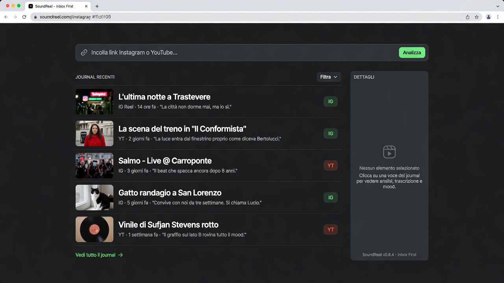
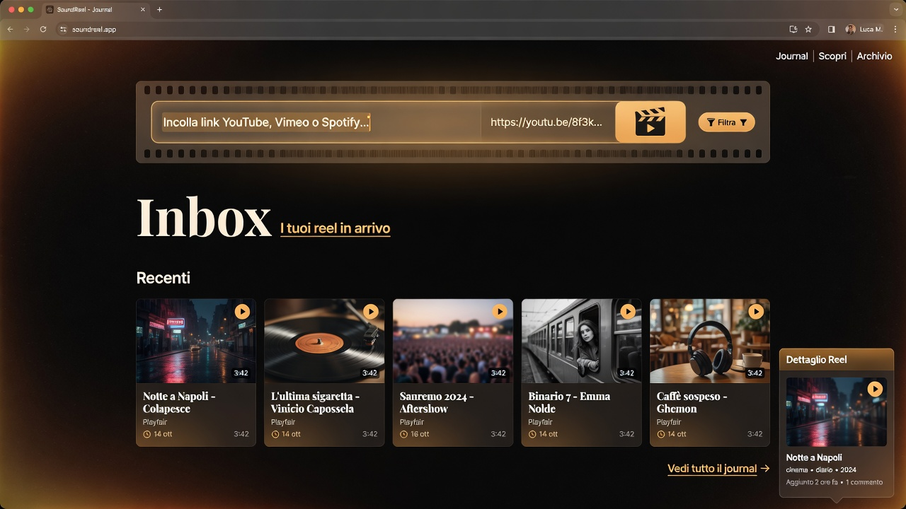
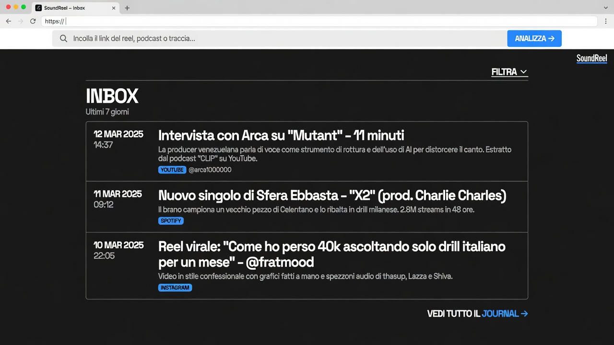

Homepage Inbox First — 3 stili
Scegli A, B, C o un remix. Dimmi la lettera in chat.

A — Editorial mono
Inter, charcoal, accent verde. Input dominante, lista recente quieta, filtri nascosti.

B — Warm cinematic
Playfair + ambra, thumb grandi stile film, glow caldo.

C — Swiss brutalist
Bordi netti, blu elettrico, date bold, look newspaper.
Opzioni: A · B · C · Remix A+B (layout A + thumb/warm da B)